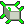

3ds Max
Ver1.3.4
3ds Max 2021以降。2022系のPySide2と新しいPySide6環境を考慮しています。
NormalFix_MAX.pyCross-DCC Normal Utility
3ds Max・Maya・Blenderで、反転法線やハードサーフェスの不自然な陰影をまとめて補正するツールです。 複数メッシュを選択して、同じ考え方で処理できます。

Ver1.3.4
3ds Max 2021以降。2022系のPySide2と新しいPySide6環境を考慮しています。
NormalFix_MAX.pyVer1.0.2
Maya 2025／2026向け。外部ライブラリを使わず、maya.cmdsで動作します。
NormalFix_Maya.pyVer1.0.2
Blender 5.0向け。Nパネルから操作できるスクリプト／アドオン形式です。
NormalFix_Blender5.py次の5ファイルを同じフォルダに置いてください。HTML内のリンクとアイコンは相対パスで参照します。
NormalFix/
├─ NormalFix_MAX.py
├─ NormalFix_Maya.py
├─ NormalFix_Blender5.py
├─ NormalFix_Manual.html
└─ NormalFix.png| プリセット | スムース角度 | 用途 |
|---|---|---|
| 標準 | 35° | 迷った場合の基本設定。一般的なプロップや背景モデル向け。 |
| ハードサーフェス | 5° | わずかな角度差もハード境界として残したい機械部品向け。 |
| 滑らか | 90° | 広い範囲を滑らかにつなぎたい曲面や有機的形状向け。 |
角度が小さいほどハードエッジが増え、角度が大きいほど滑らかにつながります。
NormalFix_MAX.pyを開きます。「最後にモディファイアを集約する」がONの場合、スタック全体をメッシュへ確定します。
NormalFix_Maya.pyを開き、ファイル全体を実行します。Maya標準のvertexNormalMethodを使い、面積・角度・面積＋角度を設定します。
NormalFix_Blender5.pyをText Editorで開き、実行します。Nキーを押し、「NormalFix」タブを開きます。Blender 5のset_sharp_from_angle()を使い、面をスムーズ化して角度からSharp境界を設定します。